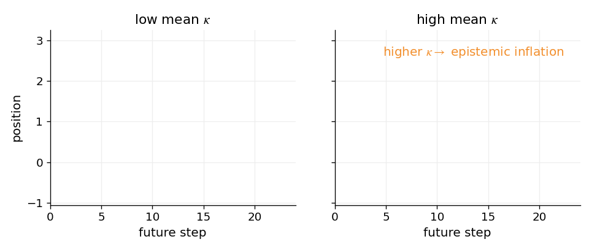
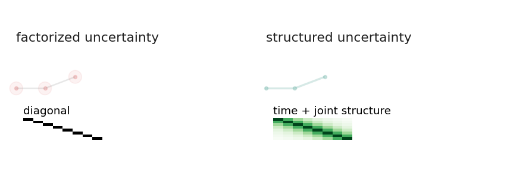
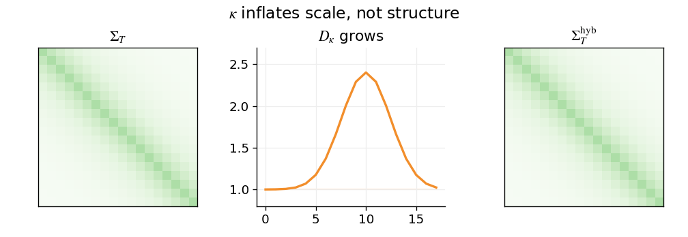
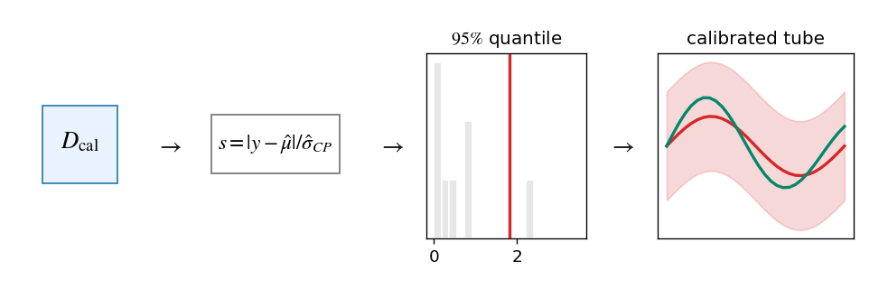
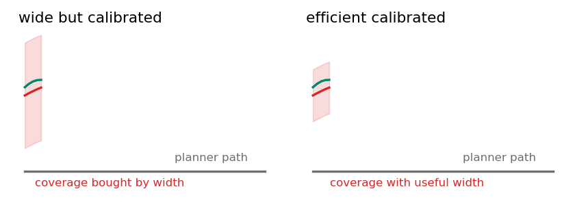
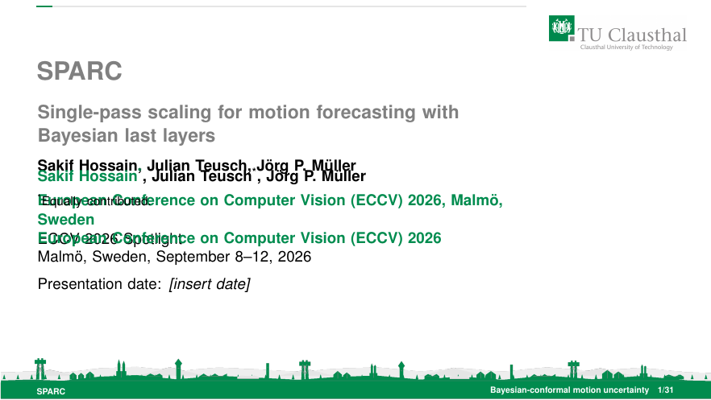
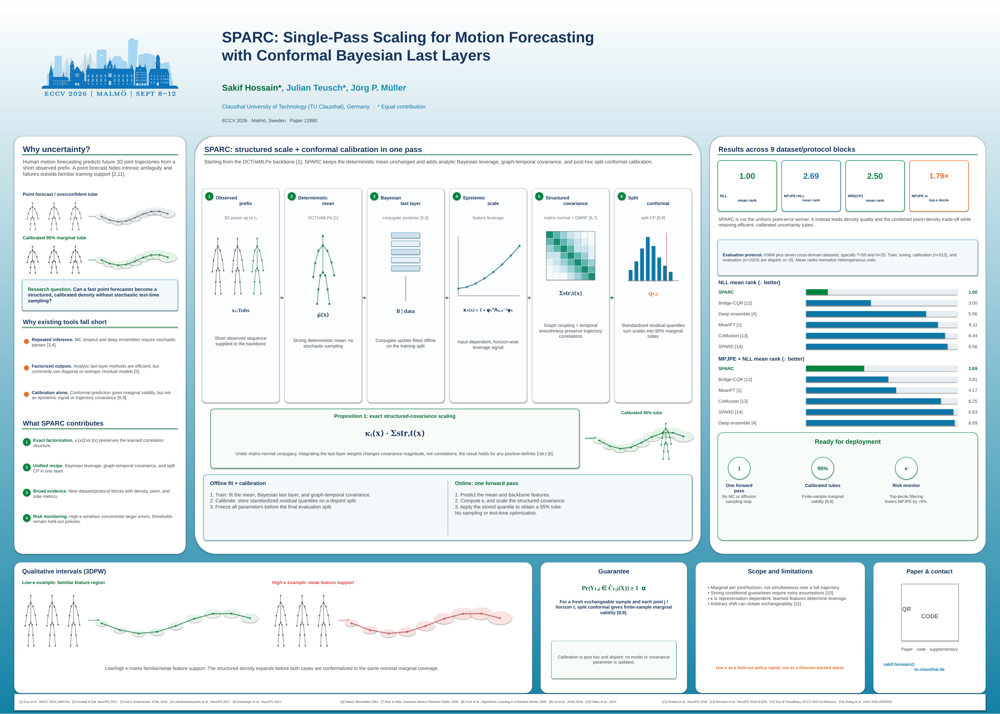

Bayesian leverage
A conjugate Bayesian last layer yields κₜ(x), an analytic measure of how strongly a test input is supported by the learned feature representation.

ECCV 2026 Spotlight · Malmö, Sweden
A fast deterministic motion forecaster becomes a structured, calibrated predictive density without Monte Carlo sampling or an ensemble loop.
The problem
Human motion forecasting is a core component for planning around people. SPARC retains the speed of a deterministic backbone while adding an analytic epistemic signal, structured graph-temporal covariance and post-hoc split conformal calibration.
Method
A conjugate Bayesian last layer yields κₜ(x), an analytic measure of how strongly a test input is supported by the learned feature representation.
κₜ scales a graph-temporal covariance. Uncertainty expands where support is weak while correlations across joints and future steps remain intact.
Held-out residual quantiles turn predictive scales into 95% marginal tubes with finite-sample validity under exchangeability.
Animated explanations
The technical deck contains five animated figures. They remain live here, including covariance scaling, calibration and low-versus-high κ examples.




Technical presentation
Use the controls, arrow keys or the slider. Animated figures play directly inside the corresponding slides; the downloadable PDF preserves the complete technical narrative.

ECCV 2026
The conference poster condenses the motivation, six-stage pipeline, main benchmark results and deployment scope into a single visual overview.

Resources
Citation
Sakif Hossain*, Julian Teusch*, and Jörg P. Müller. SPARC: Single-Pass Scaling for Motion Forecasting with Conformal Bayesian Last Layers. European Conference on Computer Vision (ECCV), 2026. *Equal contribution.
{kind=link}